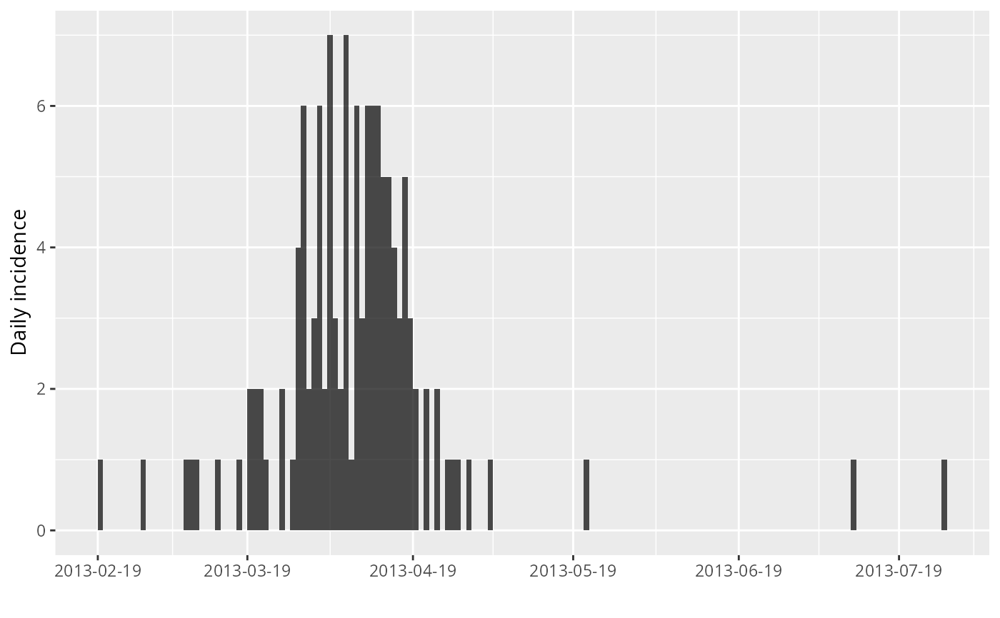
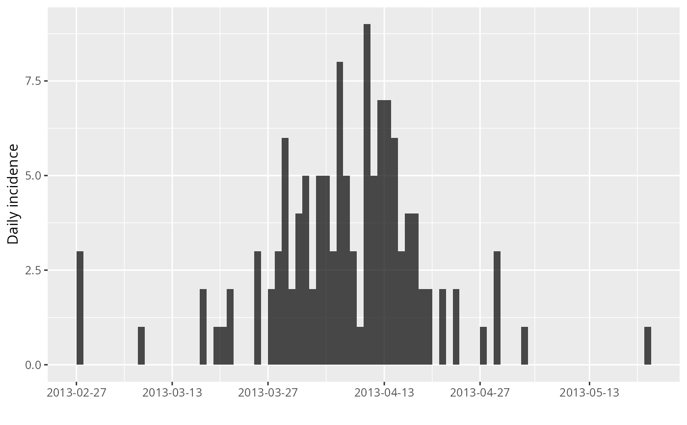
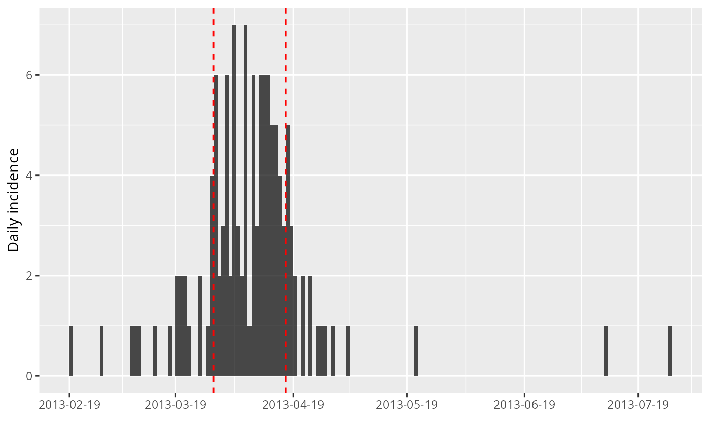
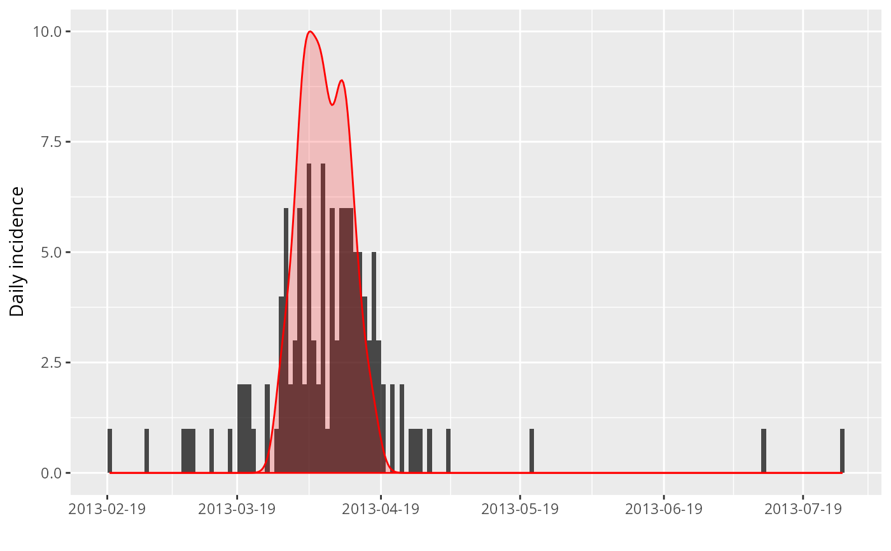

R/estimate_peak.R
estimate_peak.RdThis function can be used to estimate the peak of an epidemic curve stored as
incidence, using bootstrap. See bootstrap for more information
on the resampling.
estimate_peak(x, n = 100, alpha = 0.05)A list containing the following items:
observed: the peak incidence of the original dataset
estimated: the mean peak time of the bootstrap datasets
ci: the confidence interval based on bootstrap datasets
peaks: the peak times of the bootstrap datasets
Input dates are resampled with replacement to form bootstrapped datasets; the peak is reported for each, resulting in a distribution of peak times. When there are ties for peak incidence, only the first date is reported.
Note that the bootstrapping approach used for estimating the peak time makes the following assumptions:
the total number of event is known (no uncertainty on total incidence)
dates with no events (zero incidence) will never be in bootstrapped datasets
the reporting is assumed to be constant over time, i.e. every case is equally likely to be reported
if (require(outbreaks) && require(ggplot2)) { withAutoprint({
i <- incidence(fluH7N9_china_2013$date_of_onset)
i
plot(i)
## one simple bootstrap
x <- bootstrap(i)
x
plot(x)
## find 95% CI for peak time using bootstrap
peak_data <- estimate_peak(i)
peak_data
summary(peak_data$peaks)
## show confidence interval
plot(i) + geom_vline(xintercept = peak_data$ci, col = "red", lty = 2)
## show the distribution of bootstrapped peaks
df <- data.frame(peak = peak_data$peaks)
plot(i) + geom_density(data = df,
aes(x = peak, y = 10 * ..scaled..),
alpha = .2, fill = "red", color = "red")
})}
#> > i <- incidence(fluH7N9_china_2013$date_of_onset)
#> 10 missing observations were removed.
#> > i
#> <incidence object>
#> [126 cases from days 2013-02-19 to 2013-07-27]
#>
#> $counts: matrix with 159 rows and 1 columns
#> $n: 126 cases in total
#> $dates: 159 dates marking the left-side of bins
#> $interval: 1 day
#> $timespan: 159 days
#> $cumulative: FALSE
#>
#> > plot(i)

#> > x <- bootstrap(i)
#> > x
#> <incidence object>
#> [126 cases from days 2013-02-27 to 2013-05-21]
#>
#> $counts: matrix with 84 rows and 1 columns
#> $n: 126 cases in total
#> $dates: 84 dates marking the left-side of bins
#> $interval: 1 day
#> $timespan: 84 days
#> $cumulative: FALSE
#>
#> > plot(x)

#> > peak_data <- estimate_peak(i)
#> > peak_data
#> $observed
#> [1] "2013-04-03"
#>
#> $estimated
#> [1] "2013-04-06"
#>
#> $ci
#> 2.5% 97.5%
#> "2013-03-29" "2013-04-17"
#>
#> $peaks
#> [1] "2013-04-03" "2013-04-08" "2013-04-14" "2013-04-08" "2013-04-08"
#> [6] "2013-04-14" "2013-04-01" "2013-04-11" "2013-04-03" "2013-04-10"
#> [11] "2013-04-06" "2013-03-29" "2013-04-03" "2013-04-12" "2013-04-06"
#> [16] "2013-04-17" "2013-04-12" "2013-04-01" "2013-04-08" "2013-04-11"
#> [21] "2013-04-01" "2013-04-06" "2013-04-10" "2013-04-11" "2013-04-06"
#> [26] "2013-04-06" "2013-04-06" "2013-04-11" "2013-04-06" "2013-04-03"
#> [31] "2013-04-01" "2013-04-17" "2013-03-29" "2013-04-06" "2013-04-06"
#> [36] "2013-04-03" "2013-04-06" "2013-04-15" "2013-04-06" "2013-04-10"
#> [41] "2013-04-14" "2013-04-10" "2013-04-17" "2013-04-11" "2013-04-03"
#> [46] "2013-04-06" "2013-04-03" "2013-04-06" "2013-04-06" "2013-04-10"
#> [51] "2013-04-03" "2013-04-03" "2013-04-08" "2013-04-08" "2013-04-11"
#> [56] "2013-04-03" "2013-04-06" "2013-04-08" "2013-04-01" "2013-04-11"
#> [61] "2013-03-29" "2013-04-10" "2013-04-12" "2013-04-04" "2013-04-03"
#> [66] "2013-03-29" "2013-04-03" "2013-04-10" "2013-04-10" "2013-04-12"
#> [71] "2013-04-06" "2013-03-29" "2013-04-14" "2013-03-29" "2013-04-03"
#> [76] "2013-04-13" "2013-03-29" "2013-04-01" "2013-04-01" "2013-04-13"
#> [81] "2013-04-03" "2013-04-03" "2013-04-06" "2013-04-03" "2013-04-14"
#> [86] "2013-04-13" "2013-04-10" "2013-04-03" "2013-04-12" "2013-04-03"
#> [91] "2013-04-11" "2013-04-01" "2013-04-11" "2013-04-10" "2013-04-01"
#> [96] "2013-04-01" "2013-04-03" "2013-04-06" "2013-04-17" "2013-04-06"
#>
#> > summary(peak_data$peaks)
#> Min. 1st Qu. Median Mean 3rd Qu. Max.
#> "2013-03-29" "2013-04-03" "2013-04-06" "2013-04-06" "2013-04-11" "2013-04-17"
#> > plot(i) + geom_vline(xintercept = peak_data$ci, col = "red", lty = 2)

#> > df <- data.frame(peak = peak_data$peaks)
#> > plot(i) + geom_density(data = df, aes(x = peak, y = 10 * ..scaled..),
#> + alpha = 0.2, fill = "red", color = "red")
#> Warning: The dot-dot notation (`..scaled..`) was deprecated in ggplot2 3.4.0.
#> ℹ Please use `after_stat(scaled)` instead.
#> ℹ The deprecated feature was likely used in the incidence package.
#> Please report the issue at <https://github.com/reconhub/incidence/issues>.
